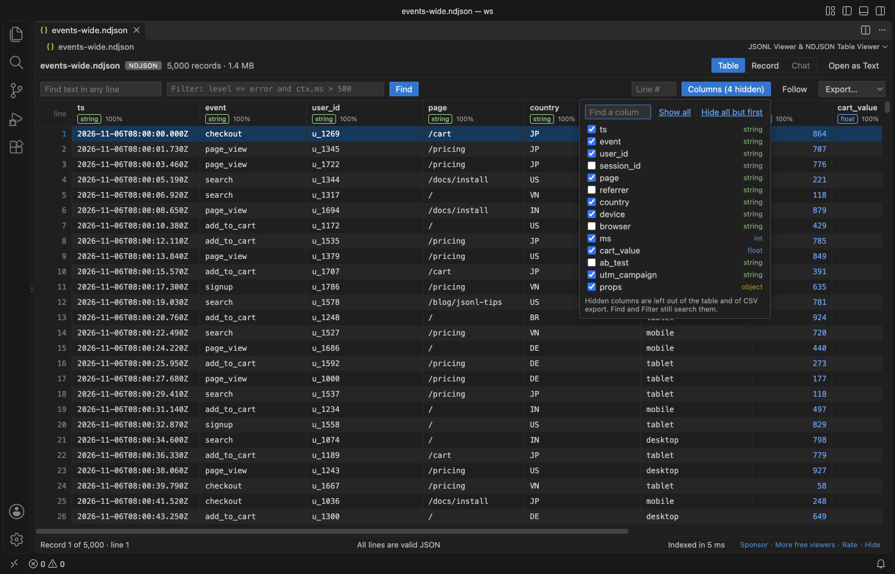

Open files in VS Code and Cursor / Tables and data
Convert a JSONL file to CSV
JSONL Viewer opens a .jsonl or .ndjson file in VS Code as a table with one column per top-level key. Filter, sort and hide columns, then Export saves the records in view as CSV, a JSON array or JSON Lines, and the CSV gets only the columns you see. Export is free. Zovo Pro (USD 19 once) adds Split JSONL File, which cuts a big file into parts or into train and validation files, and a check of fine-tuning datasets, with 3 free tries each.
Free, MIT license. Extension ID zovo.zovo-jsonl-viewer, version 0.3.1. Needs VS Code 1.90.0 or newer.
Also free from Zovo: XLSX, Excel, CSV & Parquet Viewer, VS Code Marketplace · Open VSX (Cursor, Windsurf).

Steps in VS Code
- Install JSONL Viewer from the Marketplace, or press Ctrl+P (Cmd+P on macOS) and run
ext install zovo.zovo-jsonl-viewer. - Click the
.jsonlor.ndjsonfile in the Explorer. It opens as a table. Each header shows the key, its type and how many of the first 1,000 records fill it. - To export only some records, type a filter such as
level == error and ctx.ms > 500in the Filter box and press Enter. Click a header to sort. - Click Columns and untick the keys you do not want in the CSV.
- Pick CSV in the Export menu and choose where to save.
- Open the CSV. The first row holds the column names. Nested objects and arrays are JSON text in one cell, and lines that are not valid JSON are skipped, with a count in the message.
Where Zovo Pro saves time
Opening the file, the table, Find, filters, sort, the Columns menu and export to CSV, a JSON array or JSON Lines are free. The source file is only read.
A file that is too big to handle in one piece, or a training set that needs a held-out part, is easier to work with when split. Split JSONL File writes parts of N lines, or train and validation files with an exact share such as 90 % and 10 %, picked at random with a fixed seed so a second run gives the same files. It can drop exact duplicate lines, and each part opens in JSONL Viewer and exports to CSV on its own. The other Pro tool, Check Fine-Tuning Dataset, checks every line of a training set.
With Split JSONL File (Zovo Pro)
- Right-click the
.jsonlfile in the Explorer and pick "Zovo Pro: Split JSONL File", or run "JSONL Viewer: Split into Train and Validation or Parts (Pro)..." from the Command Palette. If VS Code asks for a file, pick it. The file picker also lists.logand.txtfiles. - Pick Train and validation (90 % / 10 %, 80 % / 20 % or another share), Parts of 10,000 lines or Parts of N lines. Then pick Keep every line or Drop exact duplicate lines.
- Wait for the new files. Each line is copied byte for byte, in file order, and an existing file is never overwritten. A try counts only when the files are written.
Split JSONL File works 3 times on your computer before it asks for a license, and a try counts only when you get a result. Opening a file shows no popup and no countdown.
Zovo Pro costs USD 19 once. It is not a subscription, and it turns on the Pro tools in every Zovo extension, not only JSONL Viewer. After a card payment (Stripe) your license key shows on the next page. In VS Code, run "Zovo Pro: Enter Zovo Pro license key" from the Command Palette and paste it. The key is checked on your computer, with no network call. With GitHub Sponsors, pick the "$19 one time" tier, then run "Zovo Pro: I already paid: unlock with GitHub Sponsors" and sign in with the same GitHub account. With PayPal, send USD 19 with "Zovo Pro" in the note and the key comes by email within a day.
A team of 5: USD 59 once, by card or by PayPal. Every rule and every Pro tool is on the Zovo Pro page.
Steps in Cursor, Windsurf or VSCodium
- Open the Extensions view with Ctrl+Shift+X (Cmd+Shift+X on macOS).
- Search for
zovo.zovo-jsonl-viewerand click Install. Cursor, Windsurf and VSCodium install from Open VSX, where it is published aszovo/zovo-jsonl-viewer. - If your editor has no gallery, download the .vsix from the Open VSX page and run "Extensions: Install from VSIX...".
- Then use it the same way as in VS Code.
What JSONL Viewer handles
.jsonl,.ndjson,.jsonlinesand.jsonl.gzfiles, and logs opened with "Open as JSON Lines (any file)".- Filters with
==,!=,>,<,contains,=~(regex),existsandmissing, joined withand. - Nested keys in filters, such as
ctx.user.idortags[0]. - Export to CSV, a JSON array or JSON Lines.
What it does not do
- CSV columns come from the top-level keys of the first 1,000 records. A key that first shows up later is not a CSV column.
- Nested objects are not split into columns. They go into one cell as JSON text.
- Sort works on up to 2,000,000 records in view. Filter first for bigger files.
- Files must be under 4 GB, and
.jsonl.gzfiles are unpacked in memory up to 512 MB.
Other options
- pandas.
read_json(path, lines=True)andto_csvconvert in two lines of Python, andjson_normalizeturns nested keys into columns. - Miller. A command line tool that converts JSON Lines to CSV and turns nested keys into dotted columns.
Install counts and Open VSX status were checked on 13 November 2026. Descriptions in quotes are the extensions' own.
Questions
Does CSV export use my filter and sort?
Yes. Export saves the records in view, after Find, Filter and sort, and the CSV leaves out the hidden columns.
What happens to nested objects?
They are written as JSON text in one cell. Pick JSON Lines or a JSON array to keep the full structure.
Does it work in Cursor or Windsurf?
Yes. Cursor, Windsurf and VSCodium install extensions from Open VSX. Search for the extension in their Extensions view and install it there.
More about JSONL Viewer
Read the JSONL Viewer page for every feature and setting, or the source code on GitHub.
Related guides
- XLSX, Excel, CSV & Parquet Viewer on the VS Code Marketplace (also on Open VSX). Opens xlsx, xls, csv and parquet files as a sortable table with SQL filters.
- View a JSONL file as a table in VS Code
- Check a fine-tuning JSONL dataset before training
- Find the bad lines in a JSONL file
- Read a JSON log file as a table and follow it
Support this work
If this extension saves you time, you can support the work on GitHub Sponsors. Monthly tiers start at $5, and one-time tiers start at $15. Sponsorship is optional, and the tool works the same without it.
Need your format supported?
Open a format request with a sample file, and I reply there whether it can be done. For USD 299 once, through this GitHub Sponsors tier, I add your file format or a missing feature to this extension, with tests, within 7 days.